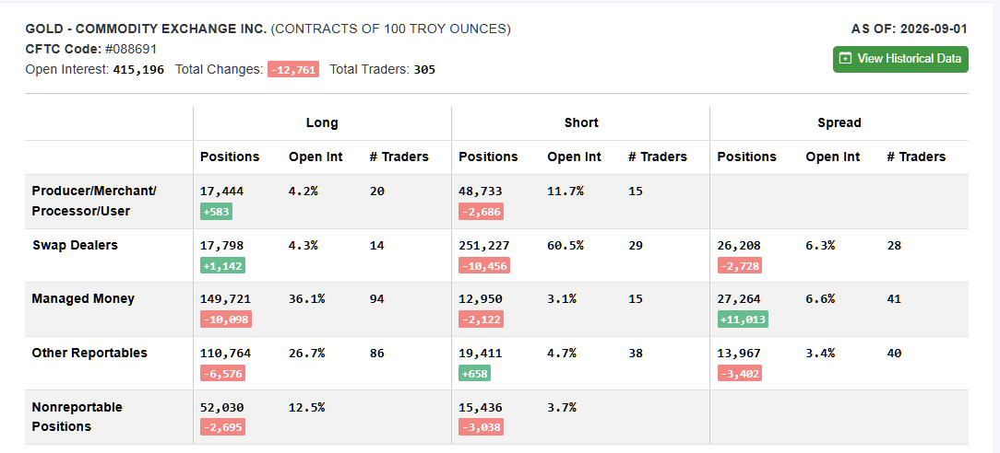

2026-W37 · Sun · single_source · confidence medium
XAUUSD 2026-W37 週報
區間中間不進場。S1 只在收復 4,459.53 且出現正式 V3.9 訊號後評估；S2 只在 4,391.54–4,406.57 形成正式 V3.2 Hammer 後評估。
轉折條件：4h 收盤脫離 4,391.54–4,459.53 並維持帶外，才切換到突破或跌破劇本。
市場摘要
W36 先下探 4,282.72，再收復至 4,427.90。日線價格仍高於 EMA50 與 EMA200，但 30m、1h、4h 動能偏弱，W37 的基準判斷是先整理再選方向。唯一獨立來源給出區間 45%、向上突破 30%、向下跌破 25%；這些是情境權重，不是歷史頻率。
資料截止：2026-09-04 market close
CFTC 部位原始依據
CFTC 公開市場部位截圖；發布前已確認不含帳戶、持倉、使用者名稱或個人資料。

四週回顧
| 2026-W33 | 4,348.55 | 4,449.73 | 4,311.01 | 4,376.16 | +27.61（+0.63%） | 窄幅整理，為四週最小區間 |
|---|---|---|---|---|---|---|
| 2026-W34 | 4,376.16 | 4,632.22 | 4,324.8 | 4,602.66 | +226.50（+5.18%） | 強勢突破週，收在週高附近 |
| 2026-W35 | 4,602.66 | 4,697.07 | 4,445.55 | 4,453.67 | -148.99（-3.24%） | 衝高後急跌，收在週低附近 |
| 2026-W36 | 4,457.8 | 4,510.9 | 4,282.72 | 4,427.9 | -29.90（-0.67%） | 下探後 V 型收復，跌幅較前週收斂 |
三劇本與機率
| range | 45% | 4h 收盤維持在 4,391.54–4,406.57 支撐與 4,443.66–4,459.53 阻力之間。 | 4h 收盤有效站上 4,459.53 或跌破 4,391.54。 | 區間內以 4,427.90–4,432.63 為均值樞紐，不追價。 |
|---|---|---|---|---|
| bullish | 30% | 4h 收盤站上 4,459.53、回踩守住 4,443.66，並出現新的正式 S1 V3.9 訊號。 | 突破後 4h 收盤跌回 4,427.90–4,432.63 下方。 | 4,490.80–4,510.90；有效突破後再看 4,697.07。 |
| bearish | 25% | 4h 收盤跌破 4,391.54，反抽無法站回 4,406.57。 | 4h 收盤重新站回 4,406.57 並守住。 | 4,335.82–4,340.50，主要延伸目標 4,282.72–4,285.38。 |
關鍵價位
| 開盤樞紐 | 4,427.90–4,432.63 | W36 實際週收與 30m 近 20 根收盤均值相距僅 4.73 點。 |
|---|---|---|
| 第一支撐 | 4,391.54–4,406.57 | 4h 未回補缺口、30m 布林下軌與 4h 布林中軌在 15.03 點內重疊。 |
| 第一阻力 | 4,443.66–4,459.53 | 多空 4h 缺口、4h EMA50 與 1h EMA200 集中於同一帶。 |
| 第二阻力 | 4,490.80–4,510.90 | 2026-09-04 實際日高與 W36 實際週高形成供給帶。 |
| 深支撐與失效線 | 4,282.72–4,285.38 | W36 實際週低與 4h 布林下軌只差 2.66 點。 |
S1／S2 計畫
| S1 V3.9 | wait | 先收復 4,443.66–4,459.53，再等待 30m 收盤突破當下布林上軌與新的正式訊號。 | 由正式訊號當下的結構與策略 box 重算，不預設。 | 每筆最多 0.75%；沒有 live 確認不執行。 |
|---|---|---|---|---|
| S2 V3.2 | watch_support | 只在 4,391.54–4,406.57 出現正式 Hammer 訊號後評估。 | 依訊號 K 低點與當下波動重算；跌破支撐後不接刀。 | 每筆最多 0.75%，每週最多 2 次實際進場。 |
事件風險
| 美國 8 月 CPI | 2026-09-11T20:30:00+08:00 | 依既定 Friday CPI 規則，所有未平倉部位須於台北時間 2026-09-10 22:00 前完成評估並平倉。 |
|---|
Producer 劇本機率對照
| Claude | neutral 45% | bullish 30% | bearish 25% |
|---|
可驗證事項
- 封存資料可直接驗證 W36 週收 4,427.90、週高 4,510.90、週低 4,282.72。
- 所有 Entry 與 SL 都是條件式參考，執行前必須有 live TradingView 與正式策略訊號。
- 2026-09-11 Friday CPI 的硬性風控期限是台北時間 2026-09-10 22:00。
分歧
- 另有一份非獨立稿給出區間 40%、看多 35%、看空 25%；因它在完稿前已接觸同版內容，不計為第二個獨立來源，也不平均機率。
- 非獨立稿提供條件式 S1 示意價，獨立來源則不預設 Entry／SL；採較保守做法，等正式訊號出現後才重算。
未解決問題與證據限制
- 本次只有一份獨立來源，因此發布模式是 single_source，不能宣稱多來源相互支持。
- 實際部位與上一週實際交易未獲持有人確認，相關狀態為 unknown。
- GVZ、實質利率與 VIX 的可用資料過舊，未用來形成 W37 方向判斷。
- 自動價格來源仍有多個 review 項目，且比較歷史只有 7 週，未升格為正式來源。
- 情境機率是判斷權重，不是相似型態的歷史發生率。
研究證據，不構成交易建議。任何執行前都必須以 live TradingView 再次確認。